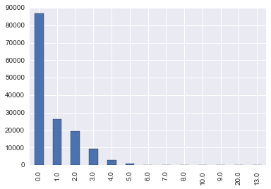
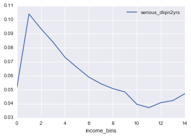

数据挖掘概览
一、引子：关于数据利用的故事
在这个故事中，指挥官做了这样几件有关联的事情。一并称之为”数据闭环“。 - 不间断的收集战场数据； - 基于某个指标抽象出战场实际； - 对指标进行分析建模，发现一个机会； - 基于分析结果进行战场决断，获取最大利益。
将指挥官换成CEO，就是商业数据闭环，基本上所有的商业数据应用，离不开这个套路。
你觉得指挥官建立了什么模型？先想想，别急着看答案
什么是数据闭环
- 度量商业行动：例如用一个指标测量用户响应率
- 识别商业机会：规划光棍节新产品或新活动，理解客户数据的波动，评价营销活动的结果
- 将数据转为知识：通过数据挖掘实施
- 基于知识行动：通常结合现有的业务流程，客户出现时推送信息，不同客户给予不同的资源
数据利用的四层境界
- 数据： 数据底层，原始数据的汪洋大海。形态：数据库。功能：直接取数
- 信息： 基于数据提炼得到的指标，新客有多少？老客有多少？老客都有什么特征，新客都有什么特征？形态：汇总报表。功能：指标提供，回答过去已经发生了什么的问题，业务人员运用得当也可以解决很多问题。
- 知识： 基于信息建立各指标之间的关系模型。什么情况下新客会转化为老客？模型结果。形态：模型，功能：回答为什么的问题，解释关系和因果，预测未来
- 智慧： 将知识融入决策流程，将模型嵌入产品。我们要怎么做，才会让新客转化为老客。形态：数据产品。功能：控制未来
数据产品
- 数据产品就是给决策者提供行动信息的载体，例如
- Amazon的商品推荐
- 天气预报
- Stock Market Predictions
- Production Process Improvements
- Health Diagnosis
- Flu Trend Predictions
- 有些看起来也能提供决策者行动信息，如黄历，星相，但它们不是基于数据的洞察。
二、什么是数据挖掘
- 数据挖掘也称为知识发现。是一个去粗存精、去伪存真的过程。是从大量数据中提取、归纳有用知识的过程和方法。将其用于决策，可以提高人类的福利。
- 开普勒三大定律 开普勒的老师第谷收集了大量天文观测数据，但却是开普勒通过研究数据找到背后的规律
- 几个相关概念
- 机器学习
- 统计理论
- 数据科学
- 模式识别
| 需要算法开发 | 不需要算法开发 | |
|---|---|---|
| 需要数据开发 | 数据科学家 | 数据挖掘工程师 |
| 不需要数据开发 | 算法工程师 | kaggle玩家 |
三、数据挖掘和我们的关系
为何需要数据挖掘：
- 如果没有数据，可以用什么决策？（直觉，经验归纳，逻辑推理，算命）
- 需要数据，因为数据就是现实世界的历史痕迹，需要通过各种痕迹来推断未来，数据就是历史，挖掘就是归纳。
- 数据太多，人脑无法直接处理。记录的数据越来越多，形式和来源都越来越复杂。自然产生的数据，人类社会产生的数据（社交网络，文本，图像，语音，视频......）
- 所以需要挖掘工具和方法的帮助。
数据挖掘为什么火？
- 当前的各项前提条件已经具备。
- 硬件价格的下降，使数据的存储和运算成本更低。
- 个人和创业公司得以进入数据领域。
- 开源软件工具和公开课分享使跨界更为容易。
- 不同学科的壁垒被打破，可以较为容易的获得并学习其它学科的知识和工具，成为专业余人士。
数据挖掘和谁打交道
- 产品：侧重于底层数据框架搭建，数据报表开发，数据产品开发，例如淘宝的数据魔方的开发工作，这类工作需要很强的软件开发背景。
- 模型：侧重于对数据的研究，用统计理论或机器学习的方法对数据进行分析建模，例如广告的点击率分析建模，这类工作需要丰富的统计理论和模型算法知识。
- 美学：侧重于对数据的创作，用WEB技术进行数据可视化或者制作信息图，例如卫报的数据网站，需要很强的可视化能力和前端技术。
- 价值：侧重于数据中包含的商业价值研究，强调对专业领域的业务理解和交流沟通，例如咨询公司发布的商业分析报告，需要广泛的业务知识和商业敏感度。
应用领域有哪些：
- 商业零售
- 医疗
- 金融
- 太空探索
- 文字语音识别
- 下棋。。。
四、什么是数据挖掘模型？
- 一个关于模型的浅显例子：如何判断一个未切开的西瓜甜不甜？
-
可能的方案：
- 准备N个西瓜
- 设计M个变量或指标（特征工程），重量、花纹、茎叶的新鲜程度、卖家的位置...，切开前记录这些指标，记为X。
- 切开后让n个人品尝打分(0表示不甜，1表示甜)，记为Y。
- 使用其中一部分数据，结合分类算法对X和Y的关系进行建模。
- 用剩下另一部分数据，检查模型的效果。
- 把模型的逻辑写成一个APP放到应用市场上，持续收获数据，改进模型。
-
一个复杂的例子，如何判断一个老人未来是否会得痴呆症（思考思考）
商业中使用模型的例子：
- 银行的信用卡发放：
银行在信用卡发放的时候会进行审核。审核某个人的资格是否符合条件以授信。在传统的审核工作，这种事是人工来做的，申请人填一张表，写上个人的年龄、职业、收入等信息（X变量）。交给有经验的银行风控师，他们来进行评价，是发信用卡，还是不发信用卡。
但在互联网时代，这种人工审核就太慢了。互联网金融的崛起就是最明显的趋势。它将全网中关于个人的行为数据进行收集整合，其中有必然有一部分人已经在金融机构有过借贷行为，考察这种行为是否有违约，将其作为Y。将其它的行为数据作为X。这样就构成了一个可以喂到分类算法中的数据集。然后这个模型就可以用在未来的申请人身上，形成审核自动化系统。
- gmail垃圾邮件自动分类：
如果你点开自己的gmail邮箱，仔细观察会发现一个垃圾邮件的标签，它平时默默的为你挡下大量的垃圾信息，而又不去干扰你，实在是数据产品的典范。那么如果你来做这种垃圾邮件的自动分类，要怎么做的呢？
如果我们考虑简单些，抛开一封电邮中的其它信息（发件人，IP...），而只取文本信息的话，这个问题就转为一个文本分类的问题。
文本的分析难点在于：文本不是给计算机阅读的，它有复杂的语言结构（语法、语义、语用），但语言中依然存在统计规律（统计语言模型）。
一个简单的文本分类模型：判断一封邮件是否垃圾邮件 - 收集N个邮件 - 从邮件中提取指标（分词，空间向量模型），构成文档-词项矩阵 - 人工标注这些邮件是否垃圾邮件 - 用一部分数据，结合算法对X和Y的关系进行建模。 - 用剩下的数据，检查模型的效果。
五、数据挖掘日常工作有哪些
-
项目讨论和规划，就是开会。这方面工作目的主要是明确业务问题。是不是可以做？大概可以怎么做？确定了业务问题之后，需要将这个业务问题翻译成一个数据问题。
-
项目准备，准备开工干活了。这方面是最为繁琐也最容易出错的地方。需要和数据仓库的同学配合取得必要的数据，探索理解数据的业务意义，评估数据质量，根据项目需要对数据进行整理转换，做大量的特征工程的工作。
-
项目实施，即数据建模，开始拷打数据了。选择尝试不同的模型算法，从数据中得到需要的结果，然后从不同方面评价效果怎么样。
-
项目结束，交付结果。确定模型如何部署，并实施部署工作。这种部署就是模型的应用，多数情况下是将结果回写到数据库中。同时结果交付给需求方，写最终的项目报告，归档所有文件。
-
阅读文献，方法研究。在比较空闲的时间，或者遇到难题的时候，都需要去找巨人的肩膀依靠一下。
一个典型的步骤流程
- 商业理解：理解业务目标和需求，并转化为数据挖掘可理解的问题定义。建模师会参加业务组的会议，主要是了解收集业务需求。
- 数据理解：筛选目标数据，检验数据质量，探索数据特征，评估可用数据。建模师会将一些初步结果呈现给业务组，得到进一步反馈。
- 数据准备：通过清洗，集成，变换，归约等处理方法构造最终数据集合。建模师开始疯狂的写SQL类的脚本去洗数据。
- 模型建立：选择和应用各种机器学习或统计方法、构建模型并调校各种参数。建模师进入炼丹阶段，期待能有好的结果。
- 模型评价：结合最初的商业目标评价并解释模型，评估其可能的商业效果。建模师将模型结果和业务团队进行沟通。
- 模型部署：按用户习惯方式实施并发布模型，提供分析结论，并持续跟踪。建模师将模型上线，监测性能。
六、数据挖掘的任务模式
- 分类 Classification [Predictive]
- 聚类 Clustering [Descriptive]
- 关联规则 Association Rule Discovery [Descriptive]
- 序列挖掘 Sequential Pattern Discovery [Descriptive]
- 回归 Regression [Predictive]
- 异常检测 Deviation Detection [Predictive]
分类方法的应用
精准化营销
- 问题: 准备发售iphone新品了，哪些用户可能会买？
- 方法:
- 找到相似产品的用户行为数据，观察是否购买作为目标变量
- 收集这些用户的行为特征，作为模型的解释变量
聚类方法的应用
用户分群:
- 问题: 如何将用户分成若干组，然后针对不同用户组进行营销活动
- 方法:
- 收集用户的基本社会特征和行为特征
- 根据用户的相似程度进行聚类分组
- 根据同组的用户购买行为判断分群的效果
关联规则应用
相似商品推荐
- 关联规则是一种规律 {面包干, … } --> {薯片}
- 买了面包干的用户往往也会去买薯片，可以利用这种关联规则，将若干商品一起放在货架上捆绑销售
- 不同的关联商品，暗示了不同的消费场景
异常检测应用
- 从正常行为中发现不正常的行为模式
- 信用卡欺诈
- 网络入侵
七、需要掌握哪些技能
-
有形的技能:
- 理论：气宗。 例如统计理论、机器学习算法。个人体会精通理论后再做数据工作就如汤泼雪。我也承认学习理论是艰难的，但是一定要在年轻的时候读最难的书。《数学之美》中谈到，技术分为术和道两种，具体的做事方法是术，做事的原理和原则是道，只追求术的人工作很辛苦，只有掌握了道才能永远游刃有余。
- 工具：剑宗。理论不用在产品上就是王语焉的学院派。从理论到产品，需要掌握各种工具。这类工具用得熟了能事半功倍，例如R、python、SQL、hadoop这类。学习工具和学习语言一样，都要多读多写，模仿揣摩，就可以运用自如。不过迷信工具是没有意义的，没有最好的工具，只有最合适的工具。如果你是独孤求败，可以玩玄铁剑，如果你是东方不败，可以玩绣花针。
- 经验：实战。有内力有剑法，就需要下山了。对战最强悍的对手，才能让你的内力剑法融为一体。做项目，在工作解决难题，才是长进最快的。
-
无形的气质:
- 好奇，好奇心和兴趣是从数据中得到洞察的驱动力。有好奇心的人才会对数据有持续的热情。
- 创造，兵无常势，数据的工作都是千差万别的，虽然可以依靠一些老的经验做些照猫画虎的事。但最好还是需要根据不同的项目情况来做出判断。独立思考和创造让你走得更远。
- 求败，创造、前沿、探索性的工作，一定会有失败，快速失败，快速学习，不断修正，能够败中求胜。
如何培养数据挖掘的技能
- 两个字：自学。 “知识与耐心，是击败强者的唯一方法。”
- 通过阅读来学习。包括了阅读经典的理论教材、代码、论文、上公开课。
- 通过牛人来学习。包括同行的聚会、讨论、大牛的博客、微博、twitter、RSS。
- 通过练习来学习。包括代码练习题、参加kaggle比赛、解决实际工作中的难题。
- 通过分享来学习。包括自己写笔记、写博客、和同事分享交流、培训新人。
八、经验之谈
建模中的坑
-
建模过程的问题
- 缺乏业务问题的沟通和理解
- 只关注训练数据或只过于相信数据
- 只依赖于一种技术
- 错误的变量输入
-
挖掘结果不真实
- 模型结果不代表任何规律
- 模型训练集可能不反映真正的总体
- 数据的详细程度有误
-
挖掘结果没有用
- 挖掘结果众所周知
- 挖掘结果不可用于决策
一点心得
-
提问题比回答问题更重要 一个具体的业务痛点是数据挖掘的起点，精心计划流程步骤，业务知识贯穿挖掘建模的每个阶段。
-
对数据持谨慎的态度 数据很可能出错，数据整理占据大部分的工作时间。
-
数据本身仅能用于描述历史 不能展现因果，也不能预知未来。
-
数据价值体现在落地应用 数据挖掘价值并不取决于模型的准确或稳定，取决于背后的决策组织。
-
不同的指标和模型都有其适用范围 随时间环境变化，所有的模式都会改变，不断尝试，不断修正。
-
工作中的文档化和自动化
一个综合案例的建模步骤
- 问题定义
- 数据探索
- 特征工程
- 建模和评估
问题定义
我们使用kaggle上一个经典的问题做为案例示范，即判断一个贷款者在后续两年内是否会违约的概率。
需要思考的关键问题
- 损失是如何发生的?
- 违约的人有哪些特点?
- 违约的占比有多少？
- 如何能改善我们的损失？
数据下载
http://www.kaggle.com/c/GiveMeSomeCredit
变量的意义
- SeriousDlqin2yrs
- 用户在后续两年内出现90天以上的还款逾期，这是目标变量，以下都是解释变量
- RevolvingUtilizationOfUnsecuredLines
- 信用卡借款占比
- age
- 借款人年龄
- NumberOfTime30-59DaysPastDueNotWorse
- 过去有逾期30-59天还款的次数
- DebtRatio
- 月度生活成本占月收入的比率
- MonthlyIncome
- 月收入
- NumberOfOpenCreditLinesAndLoans
- 包括车贷房贷在内的贷款笔数
- NumberOfTimes90DaysLate
- 过去有逾期90天以上还款的次数
- NumberRealEstateLoansOrLines
- 房贷的信贷次数
- NumberOfTime60-89DaysPastDueNotWorse
- 过去有逾期60-89天还款的次数
- NumberOfDependents
- 家庭中需要抚养者的人数
import pandas as pd
import numpy as np
import seaborn as sns
import matplotlib.pyplot as plt
%matplotlib inline
df = pd.read_csv("data/credit-training.csv") #读取数据
df.head()
| SeriousDlqin2yrs | RevolvingUtilizationOfUnsecuredLines | age | NumberOfTime30-59DaysPastDueNotWorse | DebtRatio | MonthlyIncome | NumberOfOpenCreditLinesAndLoans | NumberOfTimes90DaysLate | NumberRealEstateLoansOrLines | NumberOfTime60-89DaysPastDueNotWorse | NumberOfDependents | |
|---|---|---|---|---|---|---|---|---|---|---|---|
| 0 | 1 | 0.766127 | 45 | 2 | 0.802982 | 9120.0 | 13 | 0 | 6 | 0 | 2.0 |
| 1 | 0 | 0.957151 | 40 | 0 | 0.121876 | 2600.0 | 4 | 0 | 0 | 0 | 1.0 |
| 2 | 0 | 0.658180 | 38 | 1 | 0.085113 | 3042.0 | 2 | 1 | 0 | 0 | 0.0 |
| 3 | 0 | 0.233810 | 30 | 0 | 0.036050 | 3300.0 | 5 | 0 | 0 | 0 | 0.0 |
| 4 | 0 | 0.907239 | 49 | 1 | 0.024926 | 63588.0 | 7 | 0 | 1 | 0 | 0.0 |
df.shape # 一共15万条记录
(150000, 11)
数据探索
df.info() # 有缺失值
<class 'pandas.core.frame.DataFrame'>
RangeIndex: 150000 entries, 0 to 149999
Data columns (total 11 columns):
SeriousDlqin2yrs 150000 non-null int64
RevolvingUtilizationOfUnsecuredLines 150000 non-null float64
age 150000 non-null int64
NumberOfTime30-59DaysPastDueNotWorse 150000 non-null int64
DebtRatio 150000 non-null float64
MonthlyIncome 120269 non-null float64
NumberOfOpenCreditLinesAndLoans 150000 non-null int64
NumberOfTimes90DaysLate 150000 non-null int64
NumberRealEstateLoansOrLines 150000 non-null int64
NumberOfTime60-89DaysPastDueNotWorse 150000 non-null int64
NumberOfDependents 146076 non-null float64
dtypes: float64(4), int64(7)
memory usage: 12.6 MB
df.describe() # 描述性统计
| SeriousDlqin2yrs | RevolvingUtilizationOfUnsecuredLines | age | NumberOfTime30-59DaysPastDueNotWorse | DebtRatio | MonthlyIncome | NumberOfOpenCreditLinesAndLoans | NumberOfTimes90DaysLate | NumberRealEstateLoansOrLines | NumberOfTime60-89DaysPastDueNotWorse | NumberOfDependents | |
|---|---|---|---|---|---|---|---|---|---|---|---|
| count | 150000.000000 | 150000.000000 | 150000.000000 | 150000.000000 | 150000.000000 | 1.202690e+05 | 150000.000000 | 150000.000000 | 150000.000000 | 150000.000000 | 146076.000000 |
| mean | 0.066840 | 6.048438 | 52.295207 | 0.421033 | 353.005076 | 6.670221e+03 | 8.452760 | 0.265973 | 1.018240 | 0.240387 | 0.757222 |
| std | 0.249746 | 249.755371 | 14.771866 | 4.192781 | 2037.818523 | 1.438467e+04 | 5.145951 | 4.169304 | 1.129771 | 4.155179 | 1.115086 |
| min | 0.000000 | 0.000000 | 0.000000 | 0.000000 | 0.000000 | 0.000000e+00 | 0.000000 | 0.000000 | 0.000000 | 0.000000 | 0.000000 |
| 25% | 0.000000 | 0.029867 | 41.000000 | 0.000000 | 0.175074 | 3.400000e+03 | 5.000000 | 0.000000 | 0.000000 | 0.000000 | 0.000000 |
| 50% | 0.000000 | 0.154181 | 52.000000 | 0.000000 | 0.366508 | 5.400000e+03 | 8.000000 | 0.000000 | 1.000000 | 0.000000 | 0.000000 |
| 75% | 0.000000 | 0.559046 | 63.000000 | 0.000000 | 0.868254 | 8.249000e+03 | 11.000000 | 0.000000 | 2.000000 | 0.000000 | 1.000000 |
| max | 1.000000 | 50708.000000 | 109.000000 | 98.000000 | 329664.000000 | 3.008750e+06 | 58.000000 | 98.000000 | 54.000000 | 98.000000 | 20.000000 |
df.SeriousDlqin2yrs.value_counts()
0 139974
1 10026
Name: SeriousDlqin2yrs, dtype: int64
df.SeriousDlqin2yrs.mean() # 平均严重拖欠
0.06684
df.NumberOfDependents.unique() # 受抚养者, 查看有多少取值
array([ 2., 1., 0., nan, 3., 4., 5., 6., 8., 7., 20.,
10., 9., 13.])
df.NumberOfDependents.value_counts()
# 观察频数表，一半都没有, 有的话集中1-3个, 再往上较少
0.0 86902
1.0 26316
2.0 19522
3.0 9483
4.0 2862
5.0 746
6.0 158
7.0 51
8.0 24
10.0 5
9.0 5
20.0 1
13.0 1
Name: NumberOfDependents, dtype: int64
df.groupby("SeriousDlqin2yrs").mean()
| RevolvingUtilizationOfUnsecuredLines | age | NumberOfTime30-59DaysPastDueNotWorse | DebtRatio | MonthlyIncome | NumberOfOpenCreditLinesAndLoans | NumberOfTimes90DaysLate | NumberRealEstateLoansOrLines | NumberOfTime60-89DaysPastDueNotWorse | NumberOfDependents | |
|---|---|---|---|---|---|---|---|---|---|---|
| SeriousDlqin2yrs | ||||||||||
| 0 | 6.168855 | 52.751375 | 0.280109 | 357.151168 | 6747.837774 | 8.493620 | 0.135225 | 1.020368 | 0.126666 | 0.743417 |
| 1 | 4.367282 | 45.926591 | 2.388490 | 295.121066 | 5630.826493 | 7.882306 | 2.091362 | 0.988530 | 1.828047 | 0.948208 |
pd.value_counts(df.NumberOfDependents).plot(kind='bar');

pd.crosstab(df.NumberOfTimes90DaysLate, df.SeriousDlqin2yrs)
# 计算交叉频数表
| SeriousDlqin2yrs | 0 | 1 |
|---|---|---|
| NumberOfTimes90DaysLate | ||
| 0 | 135108 | 6554 |
| 1 | 3478 | 1765 |
| 2 | 779 | 776 |
| 3 | 282 | 385 |
| 4 | 96 | 195 |
| 5 | 48 | 83 |
| 6 | 32 | 48 |
| 7 | 7 | 31 |
| 8 | 6 | 15 |
| 9 | 5 | 14 |
| 10 | 3 | 5 |
| 11 | 2 | 3 |
| 12 | 1 | 1 |
| 13 | 2 | 2 |
| 14 | 1 | 1 |
| 15 | 2 | 0 |
| 17 | 0 | 1 |
| 96 | 1 | 4 |
| 98 | 121 | 143 |
pd.crosstab(df.age, df.NumberOfDependents)
# 年龄与受抚养者的关系
# 岁数越大抚养者会多
| NumberOfDependents | 0.0 | 1.0 | 2.0 | 3.0 | 4.0 | 5.0 | 6.0 | 7.0 | 8.0 | 9.0 | 10.0 | 13.0 | 20.0 |
|---|---|---|---|---|---|---|---|---|---|---|---|---|---|
| age | |||||||||||||
| 0 | 0 | 0 | 1 | 0 | 0 | 0 | 0 | 0 | 0 | 0 | 0 | 0 | 0 |
| 21 | 148 | 3 | 1 | 0 | 0 | 0 | 0 | 0 | 0 | 0 | 0 | 0 | 0 |
| 22 | 385 | 7 | 2 | 2 | 0 | 0 | 0 | 0 | 0 | 0 | 0 | 0 | 0 |
| 23 | 550 | 33 | 13 | 3 | 0 | 0 | 0 | 0 | 0 | 0 | 0 | 0 | 0 |
| 24 | 689 | 48 | 19 | 3 | 1 | 0 | 0 | 0 | 0 | 0 | 0 | 0 | 0 |
| 25 | 774 | 91 | 31 | 7 | 5 | 1 | 0 | 0 | 0 | 0 | 0 | 0 | 0 |
| 26 | 946 | 128 | 56 | 14 | 4 | 0 | 0 | 0 | 0 | 0 | 0 | 0 | 0 |
| 27 | 1001 | 192 | 53 | 32 | 4 | 0 | 0 | 0 | 0 | 0 | 0 | 0 | 0 |
| 28 | 1142 | 210 | 114 | 45 | 8 | 1 | 0 | 0 | 0 | 0 | 0 | 0 | 0 |
| 29 | 1195 | 254 | 145 | 53 | 14 | 1 | 1 | 0 | 0 | 0 | 0 | 0 | 0 |
| 30 | 1337 | 288 | 178 | 72 | 14 | 7 | 1 | 1 | 0 | 0 | 0 | 0 | 0 |
| 31 | 1314 | 344 | 245 | 91 | 18 | 4 | 0 | 0 | 0 | 0 | 0 | 0 | 0 |
| 32 | 1207 | 380 | 275 | 106 | 53 | 3 | 0 | 0 | 0 | 0 | 0 | 0 | 0 |
| 33 | 1254 | 449 | 315 | 140 | 50 | 10 | 2 | 0 | 0 | 0 | 0 | 0 | 0 |
| 34 | 1152 | 389 | 360 | 145 | 65 | 11 | 1 | 0 | 0 | 0 | 0 | 0 | 0 |
| 35 | 1136 | 418 | 398 | 184 | 58 | 15 | 3 | 1 | 1 | 0 | 0 | 0 | 0 |
| 36 | 1139 | 445 | 486 | 202 | 50 | 15 | 5 | 1 | 0 | 0 | 0 | 0 | 0 |
| 37 | 1088 | 488 | 541 | 274 | 77 | 18 | 2 | 0 | 0 | 1 | 0 | 0 | 0 |
| 38 | 1113 | 484 | 604 | 283 | 84 | 26 | 3 | 0 | 1 | 1 | 0 | 0 | 0 |
| 39 | 1202 | 544 | 691 | 383 | 111 | 27 | 4 | 1 | 1 | 0 | 1 | 0 | 0 |
| 40 | 1185 | 570 | 758 | 391 | 104 | 43 | 5 | 1 | 1 | 0 | 0 | 0 | 1 |
| 41 | 1193 | 517 | 791 | 445 | 113 | 30 | 4 | 0 | 1 | 0 | 0 | 0 | 0 |
| 42 | 1159 | 526 | 755 | 427 | 142 | 38 | 7 | 2 | 0 | 0 | 0 | 0 | 0 |
| 43 | 1205 | 556 | 789 | 431 | 156 | 33 | 9 | 4 | 1 | 0 | 1 | 0 | 0 |
| 44 | 1209 | 574 | 854 | 461 | 133 | 32 | 7 | 2 | 1 | 0 | 1 | 0 | 0 |
| 45 | 1363 | 608 | 828 | 457 | 165 | 35 | 11 | 3 | 0 | 0 | 0 | 0 | 0 |
| 46 | 1373 | 695 | 876 | 498 | 165 | 35 | 8 | 8 | 2 | 0 | 0 | 0 | 0 |
| 47 | 1439 | 672 | 863 | 491 | 148 | 46 | 9 | 0 | 2 | 0 | 1 | 0 | 0 |
| 48 | 1509 | 771 | 791 | 459 | 157 | 37 | 11 | 3 | 1 | 2 | 0 | 0 | 0 |
| 49 | 1632 | 717 | 790 | 439 | 143 | 46 | 8 | 6 | 1 | 0 | 0 | 0 | 0 |
| ... | ... | ... | ... | ... | ... | ... | ... | ... | ... | ... | ... | ... | ... |
| 74 | 1164 | 184 | 23 | 4 | 2 | 0 | 0 | 1 | 1 | 0 | 0 | 0 | 0 |
| 75 | 981 | 167 | 17 | 3 | 0 | 0 | 0 | 0 | 0 | 0 | 0 | 0 | 0 |
| 76 | 933 | 165 | 16 | 0 | 0 | 0 | 0 | 0 | 0 | 0 | 0 | 0 | 0 |
| 77 | 890 | 129 | 11 | 2 | 0 | 0 | 0 | 0 | 0 | 0 | 0 | 0 | 0 |
| 78 | 837 | 137 | 13 | 2 | 1 | 0 | 0 | 0 | 0 | 0 | 0 | 0 | 0 |
| 79 | 770 | 131 | 10 | 4 | 0 | 0 | 0 | 0 | 0 | 0 | 0 | 0 | 0 |
| 80 | 704 | 109 | 7 | 2 | 0 | 0 | 0 | 0 | 0 | 0 | 0 | 0 | 0 |
| 81 | 629 | 76 | 6 | 1 | 0 | 0 | 0 | 0 | 0 | 0 | 0 | 0 | 0 |
| 82 | 527 | 69 | 1 | 0 | 1 | 0 | 0 | 0 | 0 | 0 | 0 | 0 | 0 |
| 83 | 417 | 44 | 2 | 0 | 0 | 0 | 0 | 0 | 0 | 0 | 0 | 0 | 0 |
| 84 | 406 | 32 | 1 | 0 | 0 | 0 | 0 | 0 | 0 | 0 | 0 | 0 | 0 |
| 85 | 403 | 30 | 2 | 0 | 0 | 0 | 0 | 0 | 0 | 0 | 0 | 0 | 0 |
| 86 | 318 | 46 | 2 | 0 | 1 | 0 | 0 | 0 | 0 | 0 | 0 | 0 | 0 |
| 87 | 279 | 29 | 1 | 1 | 0 | 0 | 0 | 0 | 0 | 0 | 0 | 0 | 0 |
| 88 | 244 | 20 | 1 | 0 | 0 | 0 | 0 | 0 | 0 | 0 | 0 | 0 | 0 |
| 89 | 230 | 11 | 1 | 0 | 0 | 0 | 0 | 0 | 0 | 0 | 0 | 0 | 0 |
| 90 | 148 | 19 | 0 | 0 | 0 | 0 | 0 | 0 | 0 | 0 | 0 | 0 | 0 |
| 91 | 119 | 10 | 0 | 0 | 0 | 0 | 0 | 0 | 0 | 0 | 0 | 0 | 0 |
| 92 | 75 | 7 | 0 | 0 | 0 | 0 | 0 | 0 | 0 | 0 | 0 | 0 | 0 |
| 93 | 67 | 3 | 0 | 0 | 0 | 0 | 0 | 0 | 0 | 0 | 0 | 0 | 0 |
| 94 | 33 | 2 | 0 | 0 | 0 | 0 | 0 | 0 | 0 | 0 | 0 | 0 | 0 |
| 95 | 33 | 4 | 0 | 0 | 0 | 0 | 0 | 0 | 0 | 0 | 0 | 0 | 0 |
| 96 | 12 | 2 | 0 | 0 | 0 | 0 | 0 | 0 | 0 | 0 | 0 | 0 | 0 |
| 97 | 11 | 1 | 0 | 0 | 0 | 0 | 0 | 0 | 0 | 0 | 0 | 0 | 0 |
| 98 | 5 | 0 | 0 | 0 | 0 | 0 | 0 | 0 | 0 | 0 | 0 | 0 | 0 |
| 99 | 5 | 0 | 0 | 0 | 0 | 0 | 0 | 0 | 0 | 0 | 0 | 0 | 0 |
| 101 | 3 | 0 | 0 | 0 | 0 | 0 | 0 | 0 | 0 | 0 | 0 | 0 | 0 |
| 102 | 2 | 1 | 0 | 0 | 0 | 0 | 0 | 0 | 0 | 0 | 0 | 0 | 0 |
| 103 | 3 | 0 | 0 | 0 | 0 | 0 | 0 | 0 | 0 | 0 | 0 | 0 | 0 |
| 107 | 1 | 0 | 0 | 0 | 0 | 0 | 0 | 0 | 0 | 0 | 0 | 0 | 0 |
84 rows × 13 columns
清洗数据
import re
# 将名字都改为 snake_case
def camel_to_snake(column_name):
"""
converts a string that is camelCase into snake_case
"""
s1 = re.sub('(.)([A-Z][a-z]+)', r'\1_\2', column_name)
return re.sub('([a-z0-9])([A-Z])', r'\1_\2', s1).lower()
camel_to_snake("javaLovesCamelCase")
'java_loves_camel_case'
df.columns = [camel_to_snake(col) for col in df.columns]
df.columns.tolist()
['serious_dlqin2yrs',
'revolving_utilization_of_unsecured_lines',
'age',
'number_of_time30-59_days_past_due_not_worse',
'debt_ratio',
'monthly_income',
'number_of_open_credit_lines_and_loans',
'number_of_times90_days_late',
'number_real_estate_loans_or_lines',
'number_of_time60-89_days_past_due_not_worse',
'number_of_dependents']
from sklearn.neighbors import KNeighborsRegressor
income_imputer = KNeighborsRegressor(n_neighbors=1)
# 数据分为两部分，有缺失的和无缺失的，用无缺失的数据建立模型来判断缺失数据的可能取值
train_w_monthly_income = df[df.monthly_income.isnull()==False]
train_w_null_monthly_income = df[df.monthly_income.isnull()==True]
cols = ['number_real_estate_loans_or_lines', 'number_of_open_credit_lines_and_loans']
income_imputer.fit(train_w_monthly_income[cols], train_w_monthly_income.monthly_income)
# 用房产贷款次数以及未结束贷款次数来训练月收入
KNeighborsRegressor(algorithm='auto', leaf_size=30, metric='minkowski',
metric_params=None, n_jobs=1, n_neighbors=1, p=2,
weights='uniform')
new_values = income_imputer.predict(train_w_null_monthly_income[cols])
# 再用模型预测缺失值中的月收入
train_w_null_monthly_income.ix[:,'monthly_income']=new_values
# imputation
df_imputed = train_w_monthly_income.append(train_w_null_monthly_income)
df_imputed.shape # 填充缺失值 done
(150000, 11)
df_imputed.ix[df_imputed.number_of_dependents.isnull(),'number_of_dependents'] = -1
df_imputed.info()
<class 'pandas.core.frame.DataFrame'>
Int64Index: 150000 entries, 0 to 149997
Data columns (total 11 columns):
serious_dlqin2yrs 150000 non-null int64
revolving_utilization_of_unsecured_lines 150000 non-null float64
age 150000 non-null int64
number_of_time30-59_days_past_due_not_worse 150000 non-null int64
debt_ratio 150000 non-null float64
monthly_income 150000 non-null float64
number_of_open_credit_lines_and_loans 150000 non-null int64
number_of_times90_days_late 150000 non-null int64
number_real_estate_loans_or_lines 150000 non-null int64
number_of_time60-89_days_past_due_not_worse 150000 non-null int64
number_of_dependents 150000 non-null float64
dtypes: float64(4), int64(7)
memory usage: 13.7 MB
特征工程
df_imputed.monthly_income.hist();

def cap_values(x, cap):
if x > cap:
return cap
else:
return x
# 设定上限
df_imputed.monthly_income = df_imputed.monthly_income.apply(lambda x: cap_values(x, 15000))
# 变量离散化，分为15个bin
df_imputed['income_bins'] = pd.cut(df_imputed.monthly_income, bins=15, labels=False)
pd.value_counts(df_imputed.income_bins)
3 23168
4 19944
5 15583
6 14475
2 14038
7 10766
8 8609
14 7775
9 7672
1 7504
10 6298
0 4994
11 4454
12 2547
13 2173
Name: income_bins, dtype: int64
df_imputed[["income_bins", "serious_dlqin2yrs"]].groupby("income_bins").mean()
# 每个月收入分类中统计default平均频数
| serious_dlqin2yrs | |
|---|---|
| income_bins | |
| 0 | 0.051862 |
| 1 | 0.104211 |
| 2 | 0.093674 |
| 3 | 0.084168 |
| 4 | 0.073305 |
| 5 | 0.066033 |
| 6 | 0.059067 |
| 7 | 0.054338 |
| 8 | 0.050877 |
| 9 | 0.048488 |
| 10 | 0.039695 |
| 11 | 0.037270 |
| 12 | 0.040832 |
| 13 | 0.042338 |
| 14 | 0.047203 |
# 画出图来, 可以明显发现在1-2个 bin中的 default 最多
cols = ["income_bins", "serious_dlqin2yrs"]
df_imputed[cols].groupby("income_bins").mean().plot();

# 以年龄来看是20-30岁最高, 另外就是100岁前后, 可能是去世了?
cols = ['age', 'serious_dlqin2yrs']
age_means = df_imputed[cols].groupby("age").mean()
age_means.plot();

mybins = [0] + range(20, 80, 5) + [120]
df_imputed['age_bin'] = pd.cut(df_imputed.age, bins=mybins)
pd.value_counts(df_imputed['age_bin'])
(45, 50] 18829
(50, 55] 17861
(55, 60] 16945
(60, 65] 16461
(40, 45] 16208
(35, 40] 13611
(65, 70] 10963
(30, 35] 10728
(75, 120] 10129
(25, 30] 7730
(70, 75] 7507
(20, 25] 3027
(0, 20] 0
dtype: int64
from sklearn.preprocessing import StandardScaler
# Standardize features by removing the mean and scaling to unit variance
# 将月收入标准化
df_imputed['monthly_income_scaled'] = StandardScaler().fit_transform(df_imputed.monthly_income.reshape(-1,1))
建模和评估
df_imputed.columns
Index([u'serious_dlqin2yrs', u'revolving_utilization_of_unsecured_lines',
u'age', u'number_of_time30-59_days_past_due_not_worse', u'debt_ratio',
u'monthly_income', u'number_of_open_credit_lines_and_loans',
u'number_of_times90_days_late', u'number_real_estate_loans_or_lines',
u'number_of_time60-89_days_past_due_not_worse', u'number_of_dependents',
u'income_bins', u'age_bin', u'monthly_income_scaled'],
dtype='object')
# 特征
features = ['revolving_utilization_of_unsecured_lines',
'age',
'number_of_time30-59_days_past_due_not_worse',
'debt_ratio',
'monthly_income',
'number_of_open_credit_lines_and_loans',
'number_of_times90_days_late',
'number_real_estate_loans_or_lines',
'number_of_time60-89_days_past_due_not_worse',
'number_of_dependents',
'income_bins',
'age_bin',
'monthly_income_scaled']
X = pd.get_dummies(df_imputed[features], columns = ['income_bins', 'age_bin'])
# dummy var
print X.columns.tolist()
print X.shape
['revolving_utilization_of_unsecured_lines', 'age', 'number_of_time30-59_days_past_due_not_worse', 'debt_ratio', 'monthly_income', 'number_of_open_credit_lines_and_loans', 'number_of_times90_days_late', 'number_real_estate_loans_or_lines', 'number_of_time60-89_days_past_due_not_worse', 'number_of_dependents', 'monthly_income_scaled', 'income_bins_0', 'income_bins_1', 'income_bins_2', 'income_bins_3', 'income_bins_4', 'income_bins_5', 'income_bins_6', 'income_bins_7', 'income_bins_8', 'income_bins_9', 'income_bins_10', 'income_bins_11', 'income_bins_12', 'income_bins_13', 'income_bins_14', 'age_bin_(0, 20]', 'age_bin_(20, 25]', 'age_bin_(25, 30]', 'age_bin_(30, 35]', 'age_bin_(35, 40]', 'age_bin_(40, 45]', 'age_bin_(45, 50]', 'age_bin_(50, 55]', 'age_bin_(55, 60]', 'age_bin_(60, 65]', 'age_bin_(65, 70]', 'age_bin_(70, 75]', 'age_bin_(75, 120]']
(150000, 39)
y = df_imputed.serious_dlqin2yrs # target
from sklearn.cross_validation import train_test_split
train_X, test_X, train_y, test_y = train_test_split(X, y ,train_size=0.7,random_state=1)
# 70% 是 train data
print train_X.shape
print test_X.shape
(105000, 39)
(45000, 39)
from sklearn.linear_model import LogisticRegression
from sklearn.ensemble import RandomForestClassifier, GradientBoostingClassifier
clf = LogisticRegression() # logit 逻辑回归
clf.fit(train_X,train_y)
LogisticRegression(C=1.0, class_weight=None, dual=False, fit_intercept=True,
intercept_scaling=1, max_iter=100, multi_class='ovr', n_jobs=1,
penalty='l2', random_state=None, solver='liblinear', tol=0.0001,
verbose=0, warm_start=False)
clf.predict_proba(test_X) # 预测概率
array([[ 0.92834155, 0.07165845],
[ 0.96492419, 0.03507581],
[ 0.95753197, 0.04246803],
...,
[ 0.96021551, 0.03978449],
[ 0.87166534, 0.12833466],
[ 0.9777555 , 0.0222445 ]])
from sklearn.metrics import roc_curve, roc_auc_score, classification_report, confusion_matrix
# 评价方法
preds = clf.predict(test_X)
confusion_matrix(test_y, preds)
array([[41880, 88],
[ 2908, 124]])
print classification_report(test_y, preds, labels=[0, 1])
precision recall f1-score support
0 0.94 1.00 0.97 41968
1 0.58 0.04 0.08 3032
avg / total 0.91 0.93 0.91 45000
pre = clf.predict_proba(test_X)
roc_auc_score(test_y,pre[:,1])
0.7078206950866951
fpr, tpr, thresholds = roc_curve(test_y,pre[:,1])
plt.plot(fpr,tpr,);

# 随机森林分类器
clf = RandomForestClassifier()
clf.fit(train_X,train_y)
preds = clf.predict(test_X)
print classification_report(test_y, preds, labels=[0, 1])
precision recall f1-score support
0 0.94 0.99 0.97 41968
1 0.51 0.15 0.24 3032
avg / total 0.91 0.93 0.92 45000
pre = clf.predict_proba(test_X)
roc_auc_score(test_y,pre[:,1])
0.7867644886115015
练习： 你来改进这个挖掘的结果，使auc可以比0.78更大
df_imputed.to_csv('df_imputed',index = False)